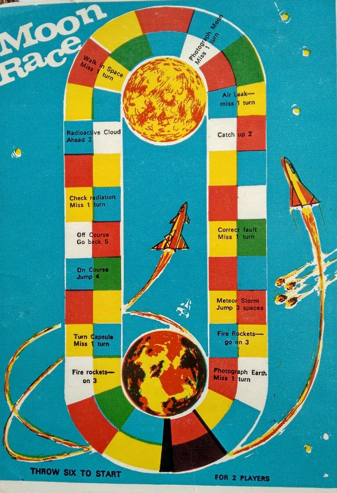
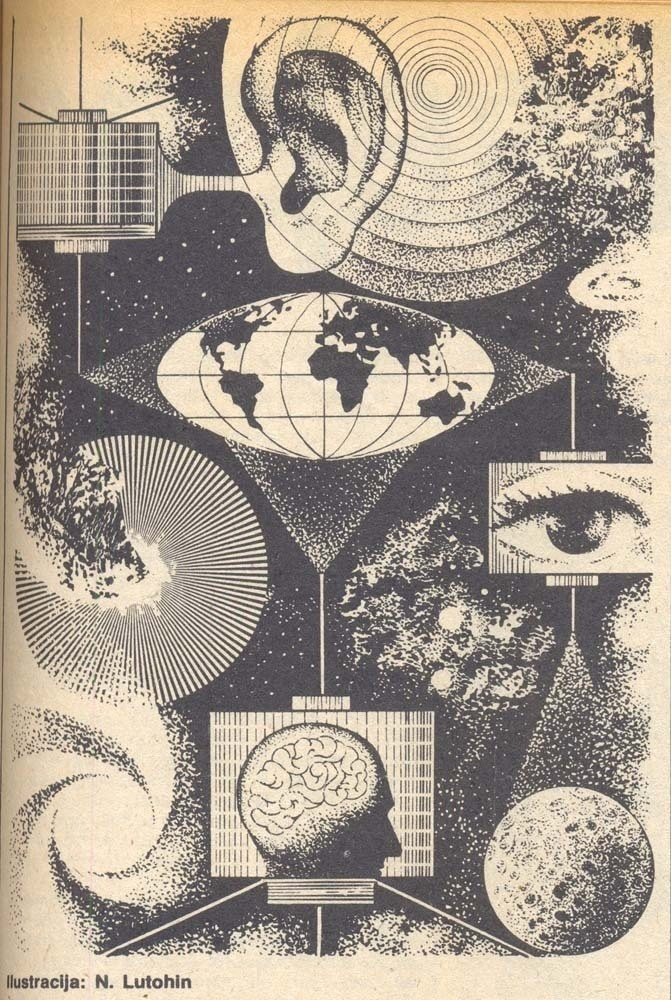

Chapter 5: Testing, Testing, 1, 2 (Infinite)
This section of Superagency (pages 99–143) shifts from optimism to mechanics: how testing, benchmarking, and iterative competition supposedly form the backbone of American AI leadership. Hoffman and Beato frame this as a uniquely democratic innovation engine. Parts of the chapter are compelling; others amplify the same concerns raised earlier in the book.

The Cold War Parallel
Hoffman highlights the rising use of phrases like “AI arms race” and “AI Space Race.” These metaphors frame AI as a geopolitical contest and cast innovation as national defense.
Cold War language implies: - national survival stakes - winner-take-all dynamics - justification for speed over caution - suspicion toward dissent
My concern is that emergency framing narrows public debate. It turns critique into perceived disloyalty. The question becomes whether urgency helps innovation or simply suppresses precaution.
Democracy vs. China – Competitive Advantage or Ideological Comfort?
The authors argue that American innovation thrives because democracy encourages open experimentation, while China favors control and pre-approval. This framing leads to the implicit claim that American hegemony is the only acceptable outcome, a point that deserves more scrutiny.
The real tension is not democracy vs. authoritarianism; it’s permissionless innovation vs. burden-of-proof safety models. For frontier AI, neither extreme may work. The chapter sidesteps how high-risk technologies challenge this binary.
Benchmarks as Pseudo-Regulation
Hoffman argues that benchmarks function as a cultural form of regulation—“regulation, gamified.” When companies compete to score well on shared tests, innovation accelerates.
The assumption is that: - companies will voluntarily exceed standards - benchmarks naturally tighten over time - competition substitutes for enforcement
In practice, gamified regulation creates problems: - companies optimize for the test, not real-world safety - metrics become PR tools - firms cherry-pick flattering benchmarks - bad actors simply ignore the system
Benchmarks matter, but they cannot govern high-risk technology alone.
Why Expect AI to Be Perfect?
Hoffman asks why society expects AI to achieve near-zero error when humans make mistakes constantly. The answer is scale.
- A human error affects one person.
- An AI system deployed to millions repeats an error instantly.
- Failures are opaque and hard to trace.
- Risks become systemic, not isolated.
Expectations are higher because the consequences are broader.
Innovation as Safety – A Tension
The authors claim innovation itself is safety: rapidly iterating helps uncover failures early. This logic underpins “permissionless innovation.” But if real users become unwitting test subjects, the line between experimentation and exploitation blurs.
The analogy to the Ford assembly line captures both sides. It democratized mobility while creating decades of infrastructural and environmental dependencies. Innovation often hides long-tail costs that appear only after widespread deployment.
The Vorsorgeprinzip
Germany’s forecaring principle requires developers to prove safety before deployment. Hoffman frames this as overly conservative, but it’s not clear that frontier AI fits the American model of “deploy first, fix later.”
When developers can’t fully predict system behavior, shifting the burden of proof may be reasonable.
Big Knowledge and Collective Intelligence
The chapter ends with “big knowledge” examples like Google Maps—systems where collective data improves outcomes for all. The story is persuasive, but it glosses over deepening dependencies: - people lose local knowledge - decision-making shifts to opaque models - infrastructure becomes more fragile

Optimistic narratives rarely acknowledge these hidden costs.
My Notes and Questions
- If testing replaces regulation, who enforces the testers?
- Who absorbs harm during iterative deployment?
- Is innovation inherently democratic, or is this an American myth?
- Why should speed be a virtue when consequences scale exponentially?
The book grows more persuasive, but its implicit assumptions grow louder too.
Final Thoughts
Chapter 5 argues that testing can replace regulation, accelerating safe innovation. The idea has merit—overly strict regulation can freeze progress.
But the chapter underestimates what happens when testing becomes a governance substitute. Benchmarks become branding exercises. Users become test subjects. Accountability evaporates.
The line between innovation and recklessness is thin, and Superagency often blurs it more than it clarifies it.